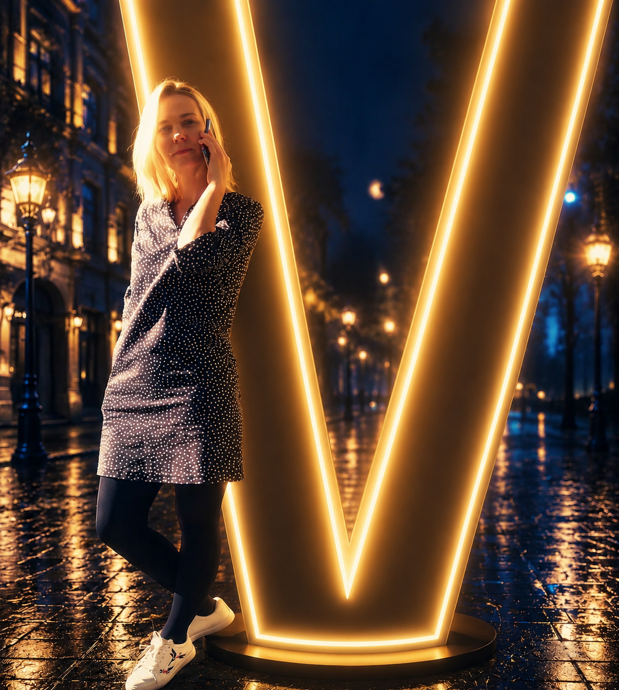

Кто я
Я Корякина Ольга, выпускница школы Нейросетей и СММ Ксении Барановой. Создаю сайты, ботов и digital-проекты с помощью ИИ.
Olga Koryakina / Digital Portfolio / Web • UX • AI
Сайты, боты и digital-проекты с помощью ИИ — для бизнеса и экспертов, которым нужен запуск без лишней сложности.
Vibe Coder

Я Корякина Ольга, выпускница школы Нейросетей и СММ Ксении Барановой. Создаю сайты, ботов и digital-проекты с помощью ИИ.
Помогаю бизнесу и экспертам запускать сайты, ботов и автоматизации — от идеи до рабочего digital-продукта.
Создала сайт для кожевенной мастерской Мастерская Корякиных — ремни и латунные пряжки ручной работы.
Telegram: @NN_OLGA_KORYAKINA
Лендинги с сильной подачей, продуманной структурой и современным визуалом.
Личные сайты и портфолио с акцентом на индивидуальность и стиль.
Создание атмосферы проекта: визуальный ритм, настроение и характер.
Использование AI-инструментов для ускорения процессов и усиления концепции.
Проработка структуры, логики блоков и пользовательского сценария.
Быстрый запуск первой сильной версии проекта.
Определение атмосферы, визуального языка и общего ощущения проекта.
Построение логики, UX и последовательности восприятия информации.
Сборка проекта с учётом визуала, скорости и адаптивности.
Подход строится не только вокруг кода и дизайна, но и вокруг восприятия проекта человеком.
Отзыв заказчика о сайте, который я создала для кожевенной мастерской.

Ольга собрала сайт, который передаёт дух нашей мастерской — ручную работу, кожу и латунь. Структура понятная, визуал тёплый и «живой». Клиентам приятно смотреть каталог, а нам — показывать изделия.
Главный инструмент — не только технологии, а умение собирать цельное визуальное впечатление.
Сильный сайт — это не просто аккуратная вёрстка.
Это ощущение энергии, атмосферы и визуальной целостности проекта.
Помогу с концепцией, структурой, визуальной упаковкой и реализацией — от идеи до готового digital-продукта.